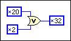

You might want to access the 32-bit Windows platform API (Win32 API). In Win32 environments, various DLLs permit your application to interact with the operating system and with the graphical user interface. Because the API offers thousands of functions, programmers must rely on the documentation for the Microsoft Software Development Kit (SDK). Microsoft Visual Studio products give you access to the SDK documentation. You also can access this information at the Microsoft Developer Network (MSDN) website.
|
Tip��Instead of using the Windows DLL as described in this example, you could easily create this message box in LabVIEW. |
In this example, you call the Windows MessageBox function, a function which illustrates several of the typical complexities of the Win32 API. MessageBox is a simple SDK function that presents a small dialog box with a message, and has the following prototype:
int MessageBox( HWND hWnd, // handle to owner window
��������������LPCTSTR lpText, // text in message box
��������������LPCTSTR lpCaption, // message box title
��������������UINT uType // message box style );
Notice the non-standard data types, such as HWND and LPCTSTR. The Win32 API uses hundreds of data types in the SDK, and very few of them are standard C data types. However, many of the non-standard data types are merely aliases for standard C data types. The API uses the aliases to identify the context of a particular data type. The following table lists the data types in the preceding prototype and the corresponding standard C data types.
| WIN32 SDK Data Type | Standard C Data Type |
| HWND | int ** |
| LPCTSTR | const char * |
| UINT | unsigned int |
To properly call the MessageBox function in LabVIEW, you need to identify the equivalent LabVIEW data types, which you can usually infer from the C data types. Mapping LPCTSTR and UINT to LabVIEW is straightforward: LPCTSTR is a C String and UINT is a U32.
Mapping HWND is more complex. The previous table lists HWND as a double pointer to an integer. However, inspection of the function shows that MessageBox uses HWND merely as a reference number that identifies the owner of the window. Because of this fact, you do not need to know the integer value for which the HWND is a handle. Instead, you need to know the value of the HWND variable itself. Because it is a double pointer, and hence a pointer, you can be treat it as a 32-bit unsigned integer, or in LabVIEW terms, a U32. Handles such as HWND are common in the Win32 SDK. In LabVIEW, you are almost always interested in the handle itself and not the data to which it points. Therefore, you can usually treat handles as U32. Handle names always begin with the letter H in the Win32 API.
If the SDK documentation does not make clear what C data type corresponds to a Win32 type, search windef.h for the appropriate #define or typedef statement.
The following table lists the Win32 SDK data types from the previous table and their corresponding LabVIEW data types.
| WIN32 SDK Data Type | LabVIEW Data Type |
| HWND | uInt32 |
| LPCTSTR | CStr (C string pointer) |
| UINT | uInt32 |
(Windows) Refer to the labview\examples\Connectivity\Libraries and Executables\Libraries and Executables.lvproj for a list of more Win32 API data types.
 Open example�
�
Open example�
� Find related examples
Find related examples
This section presents methods for finding the numerical values of constants in the Win32 API, using MessageBox constants as examples. The following table lists selected constants for MessageBox.
| Constant | Description |
| MB_ABORTRETRYIGNORE | An Abort, Retry, Ignore message box. |
| MB_CANCELTRYCONTINUE | A Cancel, Try Again, Continue message box on Windows 2000. An alternative to MB_ABORTRETRYIGNORE. |
| MB_HELP | A Help button to add to a message box on Windows XP and later. The system sends a WM_HELP message to the owner whenever the user clicks the Help button or presses<F1>. |
| MB_OK | A message box with an OK button. This is the default message box. |
In Visual Studio, programmers do not use the actual values of constants. In LabVIEW, however, you need to pass the actual numeric value of the constant to the function. You find these values in the header files that come with the SDK. The SDK documentation normally lists the relevant header file at the bottom of the help topic for a given function. For MessageBox, the SDK documentation specifies the header file as winuser.h.
The header file named in the preceding statement usually declares the constants. Searching through that header file, you should be able to find a #define statement or an enumeration that assigns the constant text a value. winuser.h defines values for some of the MessageBox constants as follows:
#define MB_OK 0x00000000L
#define MB_ABORTRETRYIGNORE 0x00000002L
#define MB_ICONWARNING MB_ICONEXCLAMATION
Thus, MB_OK has the decimal value 0. MB_ABORTRETRYIGNORE has the decimal value 2. MB_ICONWARNING is defined as MB_ICONEXCLAMATION. Elsewhere in winuser.h you find the following statement defining MB_ICONEXCLAMATION:
#define MB_ICONEXCLAMATION 0x00000030L
A hexadecimal value of 30 translates to a decimal value of 48.
Keep in mind that constants in the SDK often are used in bitfields. A bitfield is usually a single integer in which each bit controls a certain property. The uType parameter in MessageBox is an example of a bitfield. Often, you can combine multiple constants in order to set multiple properties through one parameter. In order to combine these constants, you use a bitwise OR operation ( | ). For example, to set the MessageBox to have a warning icon and the buttons Abort, Retry, and Ignore, you pass the following value of uType to MessageBox:
MB_ABORTRETRYIGNORE | MB_ICONEXCLAMATION = 0x32
In LabVIEW, you combine multiple constants by wiring integer types to the OR operator, as shown in the following block diagram.

Before you can configure the call to the Win32 API, you must identify the DLL that contains MessageBox and the specific name of MessageBox within the DLL. Refer to the description of MessageBox in the documentation that comes with your SDK or search for MessageBox Function () on the Microsoft Web site. The Requirements section of the documentation on the Microsoft Web site contains the following information:
| Minimum supported client | Windows 2000 Professional |
| Minimum supported server | Windows 2000 Server |
| Header | Winuser.h (include Windows.h) |
| Library | User32.lib |
| DLL | User32.dll |
| Unicode and ANSI names | MessageBoxW (Unicode) and MessageBoxA (ANSI) |
The DLL line specifies user32.dll as the DLL that contains MessageBox. The Unicode and ANSI names line specifies the name of the MessageBox function for each type of character encoding.